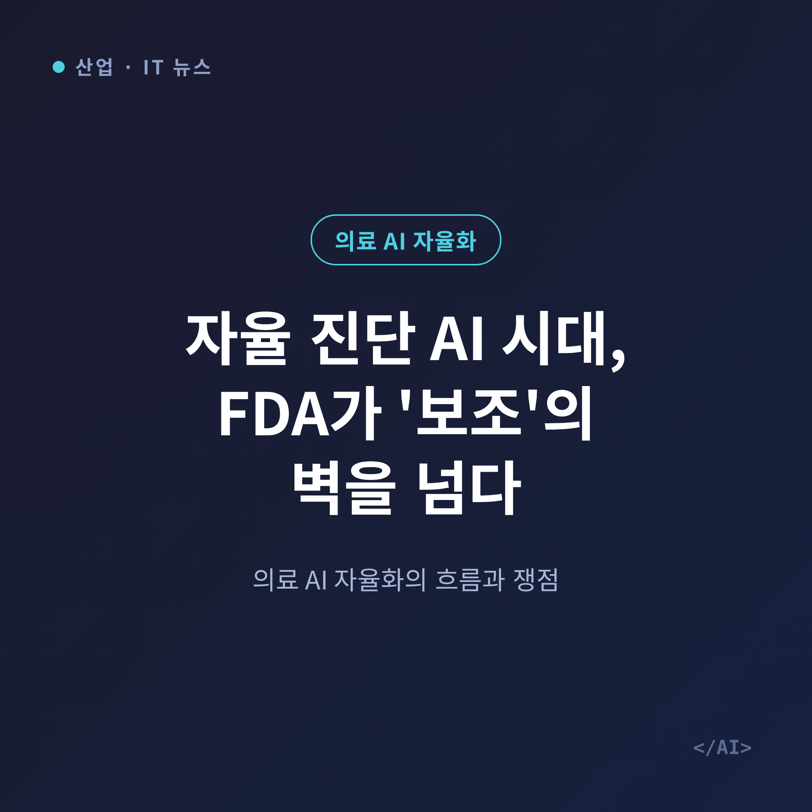
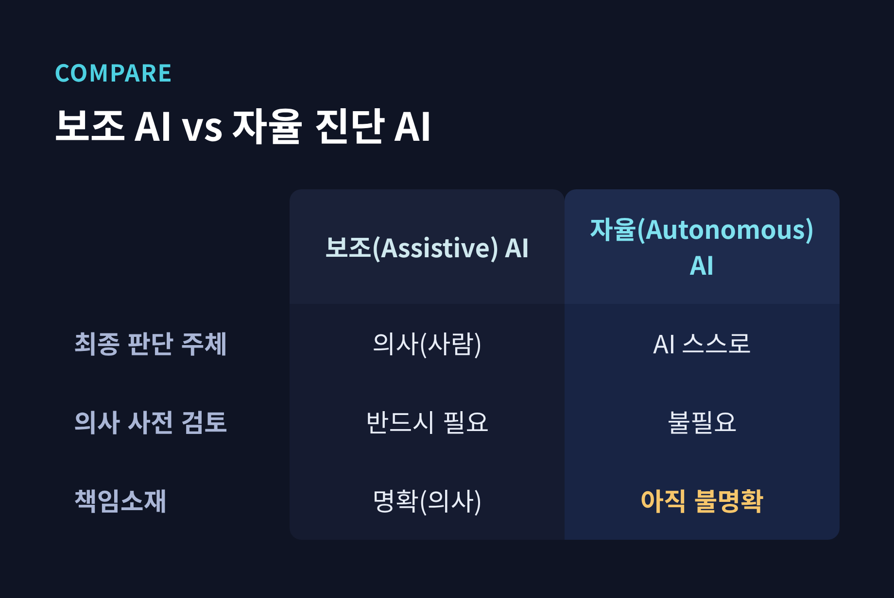
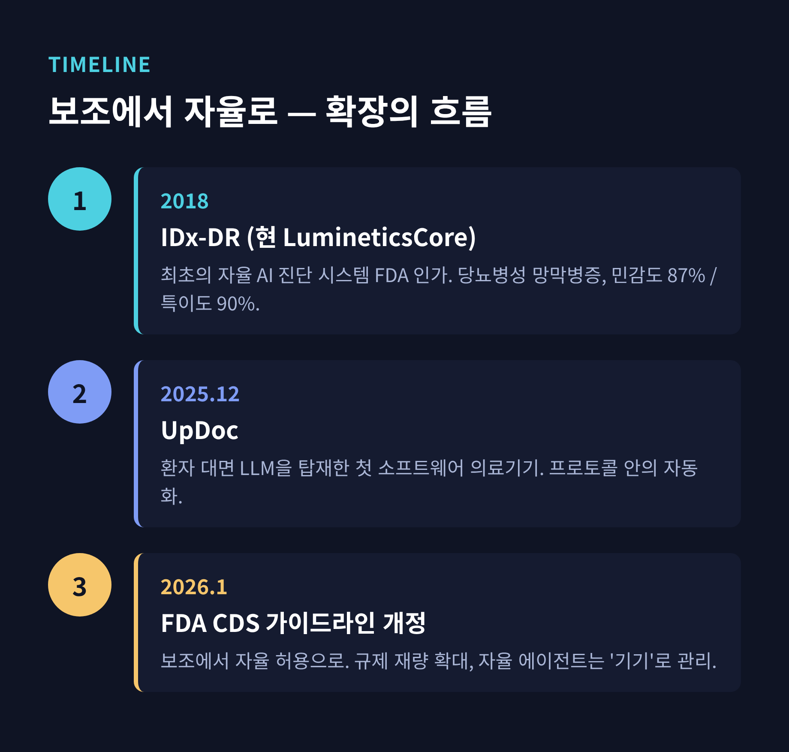
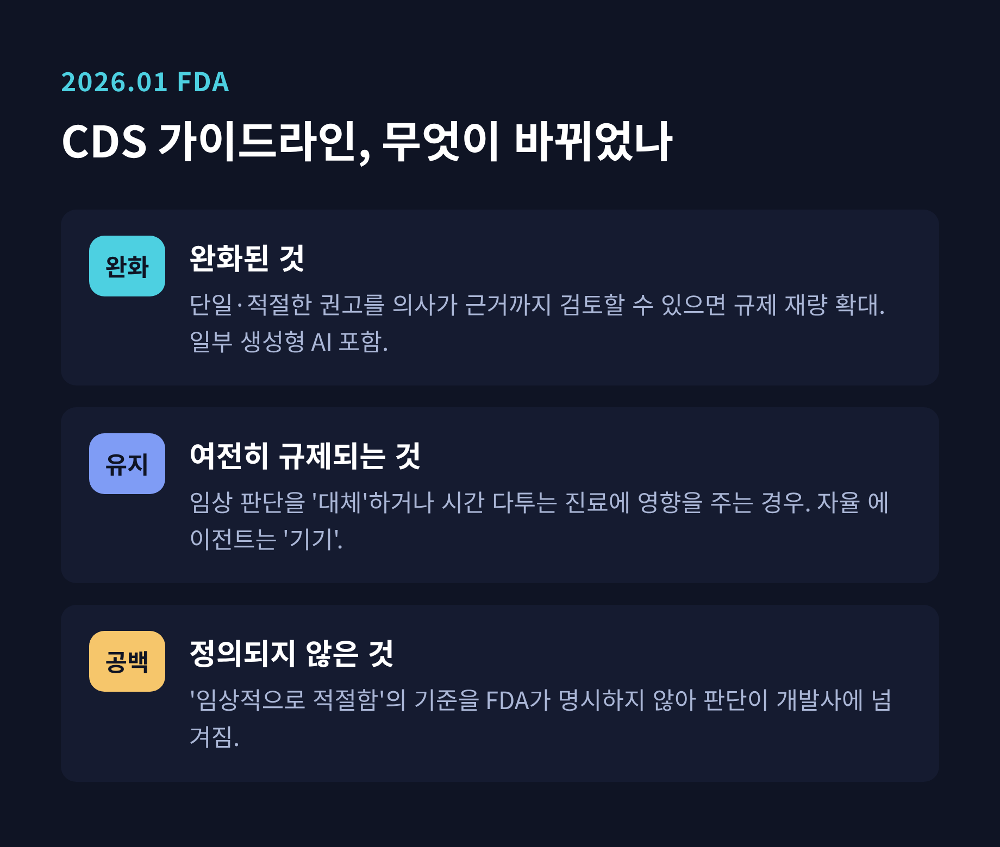
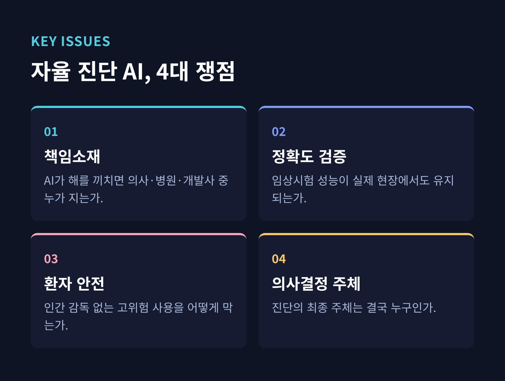
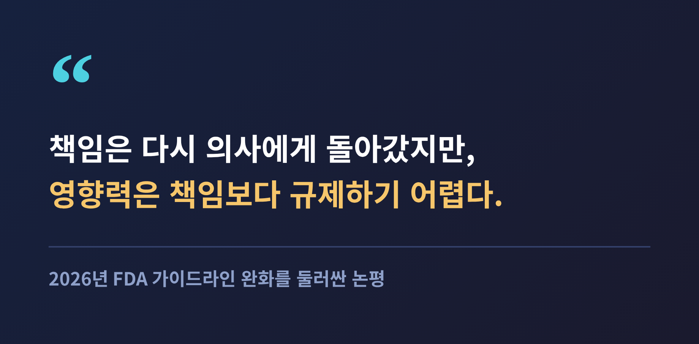

자율 진단 AI 시대, FDA가 '보조'의 벽을 넘다 — 의료 AI 자율화의 흐름과 쟁점

이번 글에서는 의료 AI가 '보조'를 넘어 '자율'로 이동하는 흐름을 정리해 보겠습니다.
2026년 미국 FDA는 의료 AI 규제를 보조 중심에서 자율 허용 쪽으로 옮기고 있습니다.
의사 개입 없이 진단을 내리는 자율 진단 AI는 이미 2018년부터 선례가 있었고, 2025~2026년 LLM·에이전트형으로 확장되는 중입니다.
다만 정확도·책임소재·환자 안전이라는 오래된 물음은 아직 정리되지 않았습니다.
무슨 일이 벌어지고 있나
그동안 의료 AI의 원칙은 분명했습니다. AI는 어디까지나 '보조(assistive)'였습니다. 후보를 제시하는 것은 AI, 최종 판단과 책임을 지는 것은 사람이었습니다.
지금은 그 경계가 흔들리고 있습니다. 2026년 들어 FDA는 자율 기능을 부분적으로 허용하는 방향으로 규제를 조정하고 있습니다. 보도에 따르면 의사 개입 없이 스스로 결론을 내는 '자율 진단' 범주가 정책의 전면으로 올라왔습니다.
여기서 하나는 짚고 넘어가야 합니다. 특정 제품이 어떤 질환을 대상으로, 어떤 조건에서 새로 승인됐는지는 공개 자료로 아직 또렷하게 확인되지 않습니다. 그래서 이 글은 확인된 흐름을 중심에 두고, 세부는 신중하게 다루겠습니다.

자율 진단 AI란 무엇인가
용어부터 정리하겠습니다. 보조 AI는 AI가 후보를 내고 의사가 확정합니다. 자율 AI는 다릅니다. 의사가 이미지를 먼저 보지 않아도, AI가 스스로 임상적 결론을 냅니다.
대표적인 정의 사례가 있습니다. 2018년 FDA가 인가한 IDx-DR입니다. 지금은 LumineticsCore라는 이름으로 불립니다. 이 시스템은 망막 사진을 분석해 수 분 안에 진단 결과와 케어 지침을 내놓습니다. 전문의의 판독을 거치지 않는다는 점이 핵심입니다.
대상 질환은 당뇨병성 망막병증이었습니다. 당뇨 환자의 주요 실명 원인입니다. 임상시험에서 민감도 87%, 특이도 90%를 기록했습니다. 안과는 이렇게 '직접적 인간 개입 없이 진단을 내린 최초의 의료 분야'가 되었습니다.
예전엔 이것이 예외적 실험이었습니다. 지금은 하나의 방향이 되어가고 있습니다.
보조에서 자율로 — 흐름은 이미 시작됐다
자율 진단 AI는 갑자기 등장한 개념이 아닙니다. 2018년의 선례 이후, 최근 몇 년 사이 새로운 형태로 번지고 있습니다.
2025년 12월에는 UpDoc이 FDA 클리어런스를 받았습니다. 환자를 직접 대면하는 대형언어모델(LLM)을 탑재한 최초의 소프트웨어 의료기기입니다. 2형 당뇨 약물 관리에 쓰입니다. 다만 이것을 '완전 자율 의사'로 보기는 어렵습니다. 정해진 치료 계획을 실행하는, 프로토콜 안의 자동화에 가깝습니다.
정책 쪽 움직임도 함께 봐야 합니다. 미국의 ARPA-H는 '임상 AI 에이전트' 프로그램을 추진하고 있습니다. 약 3년의 FDA 승인 타임라인을 염두에 둔 계획입니다. 스스로 계획하고 실행하는 에이전트형 AI를 의료 접근성 확대의 기회로 본다는 것입니다.
규모도 참고할 만합니다. 2026년까지 FDA가 승인·허가한 AI 지원 의료기기는 1,300개를 넘었습니다. 그중 대다수가 510(k) 경로를 거쳤습니다.

분기점이 된 2026년 1월 가이드라인
흐름을 결정적으로 밀어올린 사건이 있습니다. 2026년 1월 FDA의 임상의사결정지원(CDS) 소프트웨어 가이드라인 개정입니다.
바뀐 핵심은 이렇습니다. 소프트웨어가 '단일의, 임상적으로 적절한 권고'를 제시하고, 의사가 그 근거를 스스로 검토할 수 있으면 규제를 완화한다는 것입니다. 특정 생성형 AI 기능도 이 범위에 들어옵니다. 단, 의사가 그 논리와 데이터 입력을 이해하고 검증할 수 있어야 합니다.
물론 모든 것을 풀어준 것은 아닙니다. 소프트웨어가 임상 판단을 '대체'하거나 시간을 다투는 진료에 영향을 주면 여전히 강하게 규제합니다. 특히 자율형 에이전트와 영향력이 큰 생성형 AI는 '기기'로 분류해 관리합니다.
문제는 정의의 빈틈입니다. FDA는 '임상적으로 적절함'이 무엇인지 명시적으로 정의하지 않았습니다. 그 판단을 사실상 개발사에 넘긴 셈입니다.
규제가 느슨해지면 부담은 다른 곳으로 옮겨갑니다. 전문가들은 검증의 책임이 이제 '구매자' 쪽으로 이동했다고 봅니다. 어떤 도구가 안전한지 따지는 일이 병원과 의료기관의 몫이 되었다는 뜻입니다. 규제 완화가 곧 검증 부담의 소멸은 아니라는 점을 기억할 필요가 있습니다. 전 FDA 국장의 재임 기간에 시작된 이 개혁 기조는, 그의 사임 이후에도 이어지고 있습니다.

남은 쟁점 — 정확도, 책임, 안전
가장 큰 물음은 책임소재입니다. AI가 환자에게 해를 끼쳤을 때, 책임은 누구에게 있을까요. 의사인지, 병원인지, 개발사인지 아직 명확하지 않습니다. 법원은 그동안 알고리즘의 도움과 무관하게 의사가 표준 진료를 지켜야 한다고 봐왔습니다. 그러나 자율 AI가 결정에 직접 개입하면, 이 원칙만으로는 부족합니다.
정확도와 검증도 관건입니다. 임상시험에서의 성능이 실제 현장에서도 유지되는지가 신뢰의 조건입니다. FDA 역시 인간 감독 없이 AI가 진료를 좌우하는 고위험 사례는 우선 단속하겠다는 신호를 보냈습니다.
의료진의 시선도 냉정합니다. 한 조사에서 의사의 80% 이상이 이미 업무에 AI를 쓴다고 답했습니다. 그러나 안전성 검증과 데이터 프라이버시를 걱정하는 목소리가 훨씬 큽니다. 명확한 책임 프레임워크를 최우선 과제로 꼽는 이유입니다.
결국 근본적인 질문 하나가 남습니다. 진단의 최종 주체는 누구인가. 사람이 물러선 자리를 AI가 채울 때, 그 결정의 무게는 어디로 가는가.

앞으로의 전망
방향은 이미 정해진 듯 보입니다. 규제와 정책, 그리고 연구 자금이 자율화를 함께 밀고 있습니다. 당장은 저위험·표준화된 영역에서 자율 AI가 먼저 퍼질 것입니다. 망막 촬영처럼 판단 기준이 또렷한 스크리닝이 그 예입니다.
그다음은 LLM과 에이전트형입니다. UpDoc처럼 프로토콜 안에서 조심스럽게 범위를 넓혀갈 가능성이 큽니다. 완전 자율 진단과 처방은 그보다 뒤입니다. 책임과 검증의 틀이 정리되기 전까지는 제한적일 것으로 보입니다.
아직 완벽하지는 않습니다. 기술은 앞서가고, 제도는 뒤따라오는 구간입니다.

끝으로 한 가지만 덧붙이겠습니다. 자율 진단 AI의 진짜 시험대는 정확도가 아닐지도 모릅니다.
그 질문에 사회가 어떤 답을 내놓느냐에 이 변화의 속도가 달려 있습니다. 편리함보다 신뢰가 먼저 서야 한다면, 지금 우리는 그 순서를 정하는 자리에 서 있는 셈입니다.